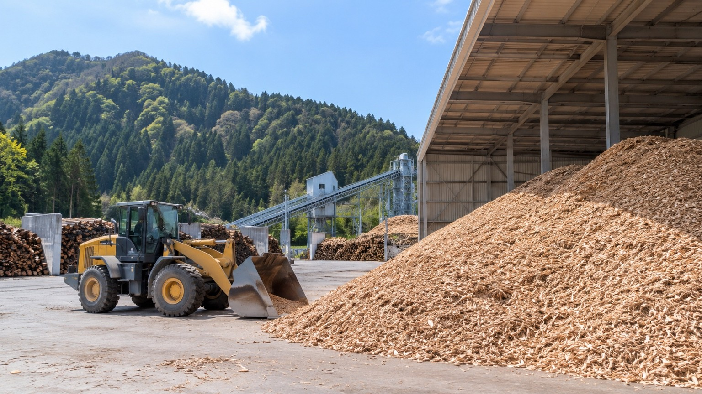
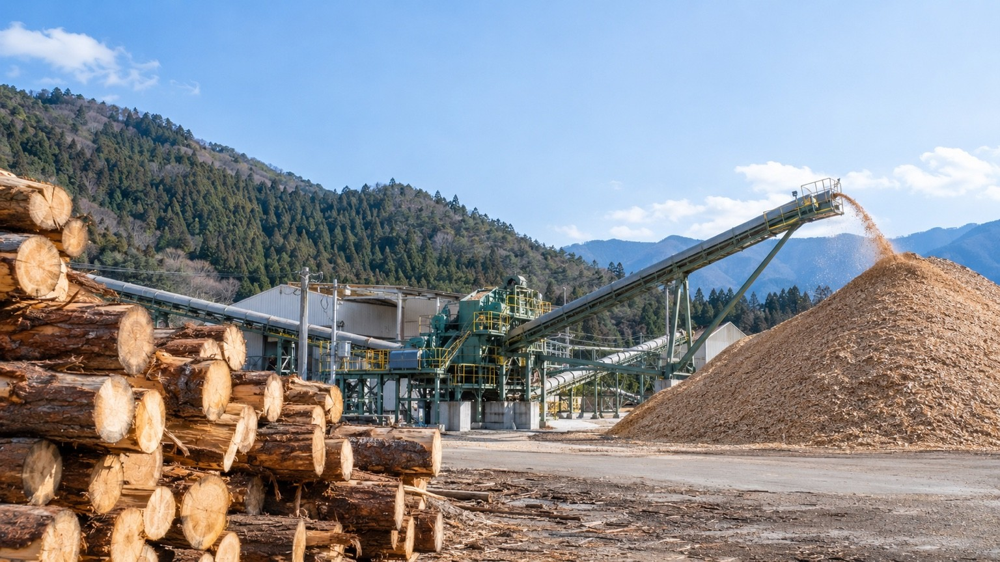
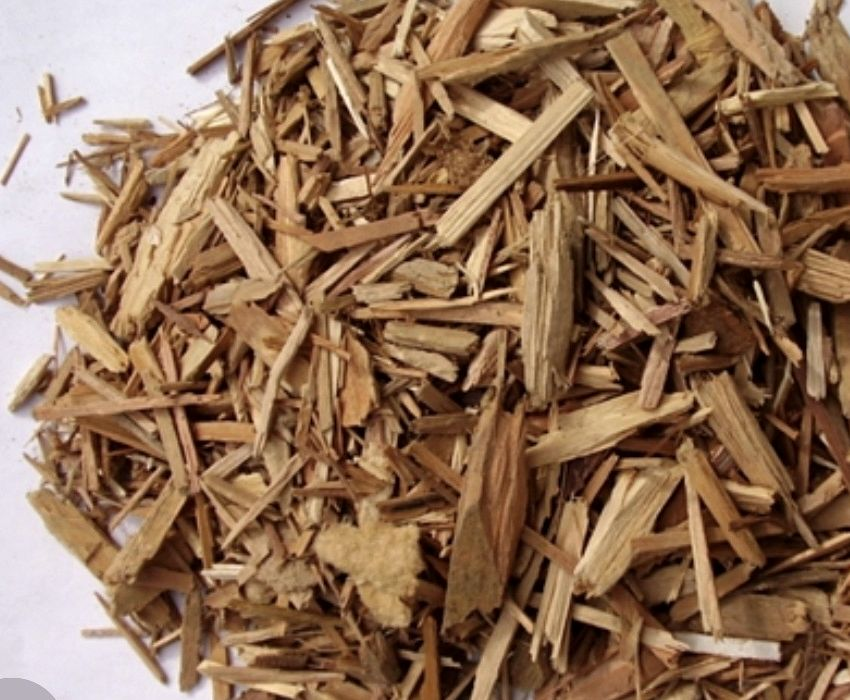

07 WOOD CHIP PRODUCTION
OUR BUSINESS / SERVICE 07
木質チップ製造
森林資源を活かし、
次のエネルギーへ。
一次破砕後の木材を自社プラントで選別・品質管理し、バイオマス燃料として利用できる木質チップへ製品化します。
ABOUT SERVICE
木質チップ製造について
木質チップ製造は、一次破砕された木材を、燃料として利用できる製品へ仕上げる工程です。
株式会社Clearthでは、自社プラントで選別・異物確認・チップサイズ管理・品質管理を行い、バイオマス発電所向け燃料として利用できる木質チップを製造しています。
- 木質チップ製造
- チップサイズ管理
- 異物確認・選別
- 品質管理
- 製品保管・出荷準備
一次破砕から木質チップ製造、製品保管、バイオマス燃料供給まで自社で一貫対応できるため、法人企業や発電事業者からの継続的な相談にも対応しやすい体制を整えています。

ご相談のポイント
- 一次破砕後の木材の種類・状態を確認します。
- チップサイズ、異物の有無、用途に応じた品質条件を確認します。
- 製品保管・出荷・バイオマス燃料供給まで見据えてご相談いただけます。
WHY CLEARTH
Clearthの木質チップ製造
現場対応から再資源化、供給までを一体で考え、安心して相談できる体制を整えています。
- 01
自社プラントで製品化
一次破砕後の木材を選別・異物確認・サイズ管理し、燃料として使いやすい木質チップへ仕上げます。
- 02
異物確認・選別
一次破砕後の木材を確認し、異物の混入を抑えながら品質の安定した製品化を行います。
- 03
チップサイズの管理・品質管理
用途に応じて粒度やサイズ感を確認し、燃料として扱いやすい木質チップへ整えます。
チップの粒度や混入物を確認し、発電所向け燃料としての利用を見据えた品質管理を行います。
- 04
供給まで見据えた体制
木質チップ製造後の保管・出荷、バイオマス燃料供給まで一貫してご相談いただけます。
製造した木質チップは、バイオマス発電所向け燃料としての供給を見据えて保管・出荷します。

WOOD TO RESOURCE
原木から、
木質チップへ。
Clearthでは、森林整備から生まれる間伐材・未利用材・伐採木を大切な森林資源として活用します。また、建設・解体現場などから発生する木材廃棄物についても、それぞれの区分と状態に応じて適切に選別・加工し、木質チップとしての再資源化につなげます。
森林資源を無駄なく活用し、再生可能エネルギーへつなげる体制を整えています。
- 一次破砕後の木材
- 選別・異物確認
- 木質チップ製造
- バイオマス燃料供給
FLOW
ご相談から完了まで
- 01お問い合わせ
- 02用途確認
- 03木質チップ製造
- 04品質確認
- 05保管・出荷
FOR YOU / WHO IT HELPS
こんなことでお困りではありませんか？
バイオマス発電事業者、木材関連企業、自治体、木質バイオマスを活用する事業者
- 用途に合う木質チップを製造したい
- 異物の確認・選別から相談したい
- チップサイズや品質条件を確認したい
- 製品保管・出荷まで相談したい
- バイオマス発電所向け燃料の供給について相談したい
PRODUCT
製造した木質チップ（実際の製品）
株式会社Clearthで製造した木質チップです。
一次破砕後の木材を自社プラントで選別・異物確認・サイズ管理し、燃料として利用しやすい木質チップへ製品化しています。
木質チップの形状や粒度は、原料となる木材の種類や状態、製造条件によって異なります。掲載している実際の製品写真をご確認いただき、用途や必要量、希望する品質条件についてご相談ください。
製造した木質チップは、主にバイオマス発電所向け燃料として供給し、森林資源の有効活用と木材廃棄物の再資源化に貢献しています。

CONSULTATION
製品写真を見ながら相談できます
実際の木質チップ写真をもとに、粒度や質感、用途に応じた品質条件を確認しながらご相談いただけます。
森林整備から生まれる間伐材・未利用材・伐採木と、建設・解体現場などから発生する木材廃棄物を、それぞれの区分と状態に応じて選別・加工し、バイオマス発電所向け燃料として活用できる木質チップへつなげます。
品質確認・製品保管・出荷まで一貫して管理し、法人企業や発電事業者からの継続的なご相談にも対応します。